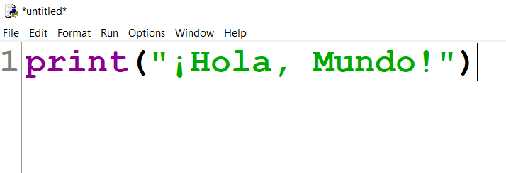
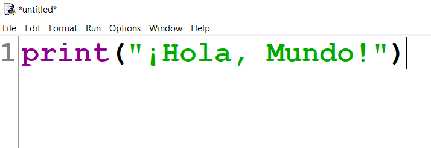
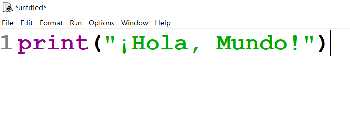

La esencia de Python radica en su naturaleza interpretada, que permite a los desarrolladores ejecutar código de manera inmediata sin necesidad de procesos de compilación previos, facilitando así un ciclo de desarrollo rápido y ágil. Esta característica, combinada con su tipado dinámico, ofrece una flexibilidad notable al momento de escribir código, ya que las variables pueden cambiar de tipo durante la ejecución del programa sin restricciones. La sintaxis de Python representa uno de sus mayores atractivos, con una estructura basada en indentación que obliga a mantener una organización visual clara del código. Este enfoque no solo mejora la legibilidad sino que también fomenta buenas prácticas de programación entre los desarrolladores. Además, su modelo de programación multiparadigma permite trabajar con orientación a objetos, programación funcional y procedimental, adaptándose así a diferentes estilos y necesidades de desarrollo.Tipos de Datos
El sistema de tipos en Python es rico y variado, comenzando con tipos primitivos como enteros, flotantes y booleanos, hasta estructuras más complejas como listas, tuplas y diccionarios. Las listas en Python son colecciones mutables y versátiles que pueden contener elementos de diferentes tipos, mientras que las tuplas ofrecen una estructura similar pero inmutable, ideal para datos que no deben modificarse. Los diccionarios constituyen otra estructura poderosa, implementando pares clave-valor que permiten acceder a la información de manera eficiente. Para manejar conjuntos de elementos únicos, Python proporciona los tipos set y frozenset, siendo este último una variante inmutable. Todos estos tipos se integran perfectamente gracias a las funciones incorporadas y a la sintaxis concisa del lenguaje.Ventajas
Entre las principales ventajas que han catapultado a Python a su posición actual se encuentra su curva de aprendizaje suave, que lo hace accesible para principiantes mientras sigue siendo lo suficientemente potente para profesionales. La vasta colección de bibliotecas estándar y de terceros cubre prácticamente cualquier necesidad, desde operaciones matemáticas avanzadas con NumPy hasta desarrollo web con Django o Flask. La comunidad de Python es otro pilar fundamental, con una base de usuarios activa que contribuye constantemente con módulos, frameworks y soluciones a problemas comunes. Este ecosistema vibrante se complementa con una excelente documentación y abundantes recursos educativos disponibles en múltiples idiomas. La capacidad de Python para integrarse con otros lenguajes y sistemas lo convierte además en una herramienta valiosa para proyectos complejos que requieren interoperabilidad.Desventajas
Sin embargo, Python no está exento de limitaciones. Su rendimiento, aunque suficiente para la mayoría de aplicaciones, no iguala al de lenguajes compilados como C++ o Rust, especialmente en tareas intensivas de computación. El Global Interpreter Lock (GIL), aunque simplifica la gestión de memoria, representa un cuello de botella para aplicaciones que requieren verdadero paralelismo. El tipado dinámico, si bien aumenta la flexibilidad, puede ocultar errores que en lenguajes estáticamente tipados se detectarían en tiempo de compilación. Esta característica hace que pruebas exhaustivas y herramientas de análisis estático sean especialmente importantes en proyectos Python de gran escala. Además, aunque existen soluciones como Kivy o BeeWare, Python no es la opción más natural para el desarrollo de aplicaciones móviles nativas
La forma de escribir un hola mundo en python es: 
 La forma de escribir un hola mundo en python es: 
La forma de escribir un hola mundo en python es: 